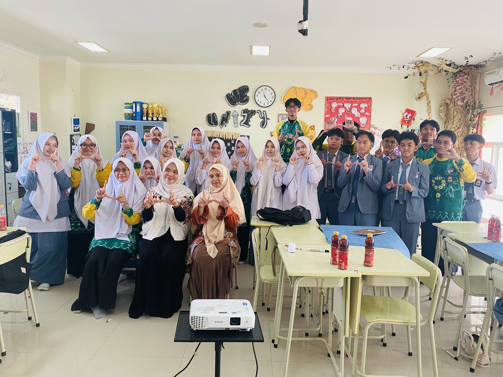

Organisasi Generasi Anti Perundungan SMA IT Ukhuwah Banjarmasin yang berdedikasi menciptakan lingkungan sekolah aman, nyaman, dan saling menghargai.

ROOTS — Generasi Anti Perundungan adalah organisasi resmi di bawah naungan SMA Islam Terpadu Ukhuwah Banjarmasin yang berfungsi sebagai garda terdepan dalam pencegahan dan penanggulangan tindak kekerasan di lingkungan sekolah.
Nama "ROOTS" melambangkan akar yang kuat — membangun fondasi karakter siswa yang beretika, taat hukum, dan memiliki empati tinggi terhadap sesama.
Landasan Pergerakan
"Berakar dalam Kebaikan, Bertumbuh dalam Keamanan"
Empat divisi terintegrasi yang menjaga ekosistem sekolah secara bersama-sama.
Menjalin kolaborasi strategis dengan lembaga profesional seperti DP3A Banjarmasin dan LPKA untuk memperkuat kesadaran hukum dan karakter siswa.
Menyediakan Feedback Corner — ruang aman online maupun offline bagi siswa untuk melapor tanpa rasa takut demi meminimalisir kasus perundungan.
Menciptakan budaya sekolah yang positif melalui kegiatan edukatif dan menyenangkan seperti ROOTS Day dan ROOTSTOPIA.
Menjaga semangat anti-perundungan tetap hidup melalui literasi visual di mading sekolah dan publikasi kreatif di media sosial.
Pemahaman adalah langkah pertama untuk perubahan. Klik setiap kartu untuk membaca penjelasan lebih detail.
Perundungan fisik adalah tindakan yang menyakiti tubuh seseorang secara langsung dan berulang. Merupakan bentuk perundungan yang paling mudah dikenali karena meninggalkan tanda fisik. Meskipun tampak nyata, korban seringkali masih takut untuk melapor karena ancaman yang diterima.
Bentuk-Bentuk
Apa yang Harus Dilakukan
Perundungan verbal menggunakan kata-kata sebagai senjata untuk menyakiti dan merendahkan korban. Sering dianggap "hanya bercanda", namun dampaknya pada kesehatan mental bisa jauh lebih dalam dan bertahan lebih lama daripada luka fisik.
Bentuk-Bentuk
Apa yang Harus Dilakukan
Perundungan sosial bertujuan merusak reputasi atau hubungan sosial seseorang di dalam kelompok. Sangat berbahaya karena sulit dibuktikan — pelaku seringkali tidak teridentifikasi. Korban akan merasa tersisih dan tidak diterima dalam lingkungan sosialnya.
Bentuk-Bentuk
Apa yang Harus Dilakukan
Cyberbullying adalah perundungan yang terjadi melalui platform digital. Yang membuat ini sangat berbahaya: ia bisa terjadi kapan saja, 24 jam sehari, bahkan saat korban berada di rumah yang seharusnya menjadi tempat aman. Anonimitas online seringkali membuat pelaku semakin berani.
Bentuk-Bentuk
Apa yang Harus Dilakukan
Kekerasan psikologis melemahkan kepercayaan diri dan kesehatan mental korban secara sistematis. Tidak meninggalkan bekas fisik sehingga sering tidak diakui sebagai perundungan, padahal dampaknya bisa sama destruktifnya dengan kekerasan fisik — bahkan lebih sulit dipulihkan.
Bentuk-Bentuk
Apa yang Harus Dilakukan
Ikuti perkembangan kegiatan, artikel edukasi, dan karya inspiratif dari anggota ROOTS.
Memuat artikel terbaru...
Sekilas momen berharga dari berbagai program dan kegiatan ROOTS bersama warga SMA IT Ukhuwah.
Feedback Corner adalah ruang pengaduan anonim yang aman untuk melaporkan segala bentuk perundungan yang kamu alami atau saksikan. Setiap laporan akan ditangani dengan serius dan dijaga kerahasiaannya.
Identitasmu terlindungi sepenuhnya. Laporkan tanpa rasa takut atau khawatir.
Tim ROOTS akan menindaklanjuti setiap laporan dengan sigap dan bertanggung jawab.
Setiap kasus ditangani bersama guru BK dan pembina yang telah terlatih.
Semua laporan tersimpan aman untuk memastikan tindak lanjut yang tepat sasaran.
Aman · Anonim · Rahasia · Terpercaya
Laporan dikirim langsung ke tim ROOTS dan Guru BK SMA IT Ukhuwah.
Data tersimpan aman dan tidak dibagikan kepada pihak yang tidak berkepentingan.
Terima kasih sudah berani bersuara. Tim ROOTS akan menindaklanjuti laporanmu dalam 2x24 jam. Kamu tidak sendirian — kami ada untukmu.